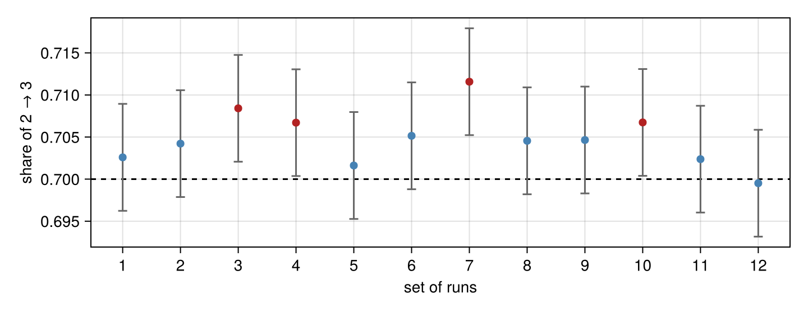

A branching graph
In a ring every state has one successor. This tutorial fits a graph with a choice in it, and looks at how the branch probabilities are measured and judged.
using GenerateDynamicalNetworksThe specification
The "foraging" example has five states. From state 2 the system goes to state 3 with probability 0.7 and to state 4 with probability 0.3; both lead to state 5 and back to the start.
spec = example("foraging"; noise=0.1)TransitionSpec(5 states, 6 edges, noise 0.1, sample 0.05)spec.P5×5 Matrix{Float64}:
0.0 1.0 0.0 0.0 0.0
0.0 0.0 0.7 0.3 0.0
0.0 0.0 0.0 0.0 1.0
0.0 0.0 0.0 0.0 1.0
1.0 0.0 0.0 0.0 0.0successors(spec, 2)2-element Vector{Int64}:
3
4spec.τ5-element Vector{Float64}:
2.0
1.0
0.5
1.5
1.0The fit
This time the backend is Synchrony, a network of phase oscillators. Nothing else changes: fit takes the specification and the backend.
model = fit(spec, Synchrony());One check
validate reports the branches as well as the dwells.
check = validate(model, spec)Check(dwell 2.010 1.000 0.499 1.492 0.998, err% +0.5 +0.0 -0.2 -0.5 -0.2, rms 0.34%, off 0.00%, dwell ok, branches ok: PASS)check.branch2-element Vector{@NamedTuple{from::Int64, to::Int64, designed::Float64, measured::Float64, ok::Bool}}:
(from = 2, to = 3, designed = 0.7, measured = 0.7025877171029581, ok = 1)
(from = 2, to = 4, designed = 0.3, measured = 0.2974122828970419, ok = 1)Each entry is one branch: where it goes from and to, its designed probability, the share measured, and whether the measured share is inside the 95% interval around the designed one. The interval comes from the number of times the branching state was left:
n = sum(check.counts[2, :])19979halfwidth = 1.96sqrt(0.7 * 0.3 / n)0.006354462853622324So with this many visits a share passes only if it is within about 0.6 percentage points of 0.7.
The protocol
acceptance = accept(model, spec)Acceptance: PASS
set 1: Check(dwell 2.010 1.000 0.499 1.492 0.998, err% +0.5 +0.0 -0.2 -0.5 -0.2, rms 0.34%, off 0.00%, dwell ok, branches ok: PASS)
set 2: Check(dwell 2.000 0.999 0.501 1.500 0.998, err% -0.0 -0.1 +0.2 +0.0 -0.2, rms 0.15%, off 0.00%, dwell ok, branches ok: PASS)
half step: Check(dwell 1.999 0.999 0.498 1.492 0.999, err% -0.1 -0.1 -0.3 -0.5 -0.1, rms 0.29%, off 0.00%, dwell ok, branches ok: PASS)How much the measured share varies
That interval is narrow, and it is the range in which a model with exactly the designed probability lands 95 times in 100. So an exact model still fails about one check in twenty, and a model that is off by half a percentage point fails far more often (How strict the branch rule is).
To see where this model stands, here are ten more sets of 64 runs, on seeds the protocol doesn't use.
starts = [9_400_001 + 200_000k for k in 0:9]
more = [validate(model, spec; seeds=s:s+63) for s in starts]
shares = [c.branch[1].measured for c in more]10-element Vector{Float64}:
0.7084143847573445
0.7067092014754262
0.7016201620162016
0.7051474262868566
0.7115749525616698
0.704552276138069
0.7046487242222998
0.7067365269461078
0.7023738280470776
0.6995155087158483The number of these ten sets that fail the branch rule:
count(c -> !c.branch_ok, more)4The figure shows twelve sets: the two of the protocol, then the ten more. Each bar is the 95% interval, drawn around the measured share. A set passes when its bar reaches the dashed line at 0.7. Blue points pass and red points fail.
using CairoMakie
CairoMakie.activate!(; type="png")
sets = [acceptance.set1; acceptance.set2; more]
measured = [c.branch[1].measured for c in sets]
half = [1.96sqrt(0.7 * 0.3 / sum(c.counts[2, :])) for c in sets]
passed = [c.branch_ok for c in sets]
fig = Figure(; size=(720, 280))
ax = Axis(fig[1, 1]; xlabel="set of runs", ylabel="share of 2 → 3", xticks=1:12)
hlines!(ax, 0.7; color=:black, linestyle=:dash)
errorbars!(ax, 1:12, measured, half; color=:gray40, whiskerwidth=8)
scatter!(ax, 1:12, measured; color=[p ? :steelblue : :firebrick for p in passed], markersize=10)
The points don't scatter evenly around the line: nearly all are above it. The mean over the twelve sets and its standard error:
using Statistics
mean(measured), std(measured) / sqrt(length(measured))(0.7048417028010984, 0.0009362136656467983)So this model sends the system to state 3 about half a percentage point too often. That is less than the half-width of the interval, which is why the model passed all three checks of the protocol, but it is enough for four of the ten further sets to fail.
Two things follow. A model that passes has branch probabilities right to within about a percentage point at this run length, not exactly. And a model that fails one check may be no worse than one that passes: look at the measured shares, not only the verdict.
The dwells are a different matter. Their rule is a fixed band of 5%, and the measured means vary much less than that from set to set:
[round.(100 .* c.err; digits=1) for c in more[1:3]]3-element Vector{Vector{Float64}}:
[0.0, 0.1, -0.2, -0.7, -0.2]
[-0.3, 0.3, -0.1, -0.5, -0.3]
[0.4, -0.1, -0.0, -0.8, -0.2]The dynamical class
classify(model, spec)(class = :heteroclinic, outcomes = "saddle saddle saddle saddle saddle")